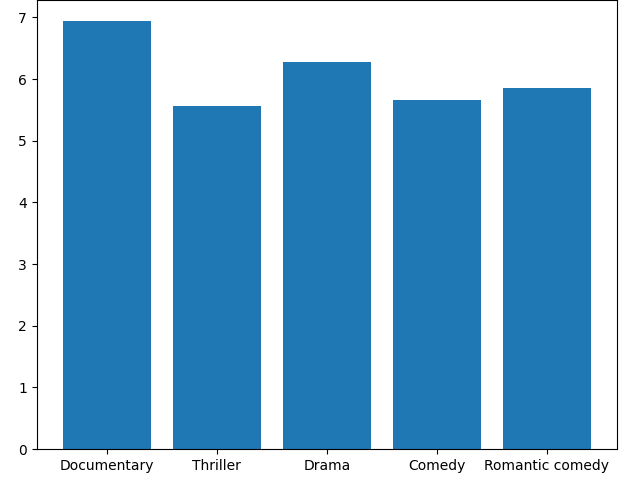

Author: Conlan Cason
Published: July 26, 2021
Question: is there a correlation between genre and IMDB score?
Question: is there a correlation between IMDB score and runtime?
Hypothesis: the average IMDB score is significantly above 5
There does appear to be some correlation between genre and IMDB score. For example, documentaries got an average score of approximately 6.9 out of 10, whereas thrillers only got around 5.6 out of 10.
Looking at the scatter chart, there does not appear to be a correlation between IMDB score and runtime.
My hypothesis that the average IMDB score is significantly above 5 appears to be correct. The reasoning behind the hypothesis is that people tend to watch films that they are interested in, and have a better chance of scoring higher than if they only watched films that they weren't interested in. However, the actual reason behind the correlation could be different. For example, maybe Netflix originals have a better reception than non-Netflix originals.
To find out whether or not there is a correlation between genre and IMDB score, I wrote a Python script that analyzes a dataset containing a list of films, with a genre and IMDB score associated with each film. From this data, I created a dictionary of genres, with each genre having an associated list of IMDB scores. I eliminated genres containing too few films associated with them in order to simplify the data and make it more understandable. I think this elimination process is fair because whether I use a hundred genres or five does not change the conclusion or obscure any essential facts. From there I created a new dictionary with each list of scores averaged into single scores for each genre. After that I used plotly to generate a bar chart to visualize the data.
To answer the second question, "Is there a correlation between IMDB score and runtime?" I generated a Scatter Chart using plotly in a Python script. From a purely visual analysis, I can see no correlation.
To find a conclusion to the claim, "The average IMDB score is significantly above 5," I created a Python script to analyze the IMDB scores. The average score turns out to be approximately 6.3, with a 99% confidence interval of (6.17, 6.38)--which means we are 99% confident that the true average IMDB score of Netflix Originals is between these two values.
Source: Netflix Original Films IMDB Scores